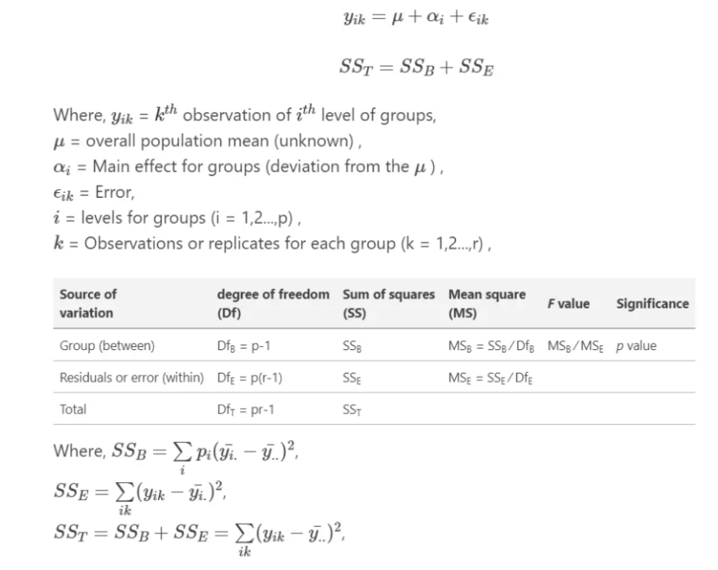
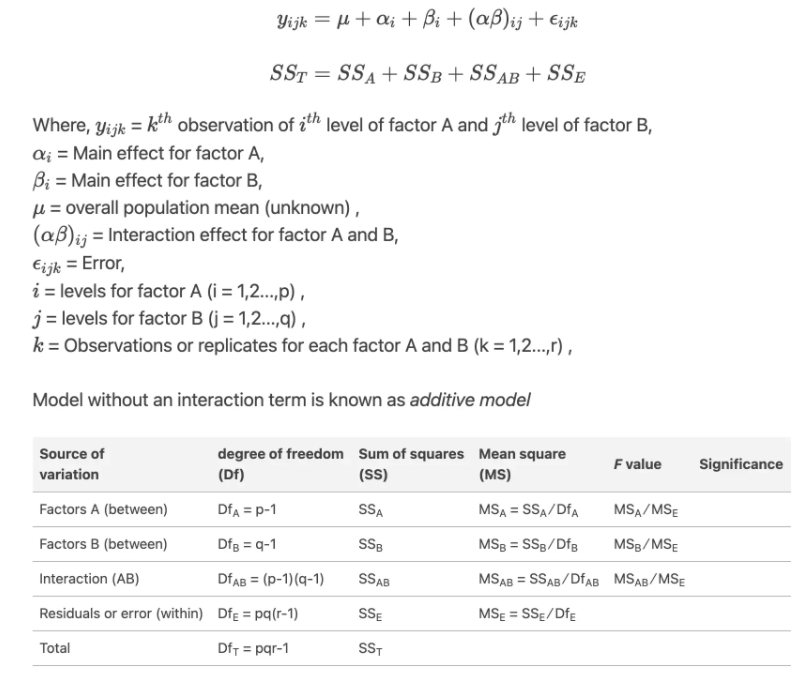

Table of Content
Load Library
In this exercise We will use following R-packages:
# load library
library(tidyverse)
library(dlookr)
library(moments)
library(car)
library(plyr)
library(data.table)
library(DT)
library(Hmisc)
library(corrplot)
library(corrr)
library(gridExtra)
library(ggExtra)
library(BSDA)
library(GGally)
library(agricolae)
library(multcomp)
library(multcompView)
library(ggfortify)
library(report)
library(ggstatsplot)Import Data
In this tutorial, we will use following data set:
green_house.csv: Rice yield and As content in contaminated and non-contaminated soils in a greenhouse experiment.
These data set could be found here.
We import this data using read_csv() from readr package.
# define working directory
dataFolder<-"E:/Dropbox/GitHub/chemstat-r-github.io/Data/"
gh.df<-readr::read_csv(paste0(dataFolder,"green_house.csv"))Analysis of Variance or ANOVA
An ANOVA test is a type of statistical test used to determine if there is a statistically significant difference between two or more categorical groups by testing for differences of means using variance. (source: https://www.simplypsychology.org/anova.html)
Groups mean differences inferred by analyzing variances
ANOVA uses variance-based F test to check the group mean equality. Sometimes, ANOVA F test is also called omnibus test as it tests non-specific null hypothesis i.e. all group means are equal
Main types: One-way (one factor) and two-way (two factors) ANOVA (factor is an independent variable)
ANOVA Hypotheses
Null hypothesis: Groups means are equal (no variation in means of groups) H0: μ1=μ2=…=μp
Alternative hypothesis: At least, one group mean is different from other groups H1: All μ are not equal Learn more about hypothesis testing and interpretation
ANOVA Assumptions
Residuals (experimental error) are normally distributed (Shapiro-Wilks Test)
Homogeneity of variances (variances are equal between treatment groups) (Levene’s or Bartlett’s Test)
Observations are sampled independently from each other
One-way ANOVA
The one-way analysis of variance (ANOVA) is used to determine whether there are any statistically significant differences between the means of two or more independent (unrelated) groups.
ANOVA model can be expressed:
model.a =aov (GAs ~Treatment, data = gh.df) # analysis variance
anova (model.a)## Analysis of Variance Table
##
## Response: GAs
## Df Sum Sq Mean Sq F value Pr(>F)
## Treatment 1 7.9779 7.9779 98.913 2.26e-12 ***
## Residuals 40 3.2262 0.0807
## ---
## Signif. codes: 0 '***' 0.001 '**' 0.01 '*' 0.05 '.' 0.1 ' ' 1Two-way or Factorial ANOVA
A two-way ANOVA (analysis of variance) has two or more categorical independent variables (also known as a factor), and a normally distributed continuous (i.e., interval or ratio level) dependent variable.
Two-way ANOVA, like one-way ANOVA tests, assumes that the observations within each cell are normally distributed and have equal variances. We’ll show you how to check these assumptions after fitting ANOVA.
Two-way ANOVA model can be expressed:
model.b =aov (GAs ~Treatment + Variety, data = gh.df)
anova (model.b) ## Analysis of Variance Table
##
## Response: GAs
## Df Sum Sq Mean Sq F value Pr(>F)
## Treatment 1 7.9779 7.9779 266.666 < 2.2e-16 ***
## Variety 6 2.2091 0.3682 12.306 2.536e-07 ***
## Residuals 34 1.0172 0.0299
## ---
## Signif. codes: 0 '***' 0.001 '**' 0.01 '*' 0.05 '.' 0.1 ' ' 1From the ANOVA table we can conclude that both Treatment and Variety statistically significant.
Two-way ANOVA with interaction effect
model.d =aov (GAs ~Treatment + Variety +Treatment:Variety, data = gh.df)
anova (model.d) ## Analysis of Variance Table
##
## Response: GAs
## Df Sum Sq Mean Sq F value Pr(>F)
## Treatment 1 7.9779 7.9779 2668.990 < 2.2e-16 ***
## Variety 6 2.2091 0.3682 123.172 < 2.2e-16 ***
## Treatment:Variety 6 0.9335 0.1556 52.049 6.668e-14 ***
## Residuals 28 0.0837 0.0030
## ---
## Signif. codes: 0 '***' 0.001 '**' 0.01 '*' 0.05 '.' 0.1 ' ' 1the p-value for the interaction between Treatment:Variety is 6.668e-142 (highly significant), which indicates that the relationships GAs dose and Treatment depends on the rice varieties.
Interpretations of ANOVA results
A nice and easy way to report results of an ANOVA in R is with the report() function from the report packagr
report(model.d)## Warning: Could not find Sum-of-Squares for the (Intercept) in the ANOVA table.## The ANOVA (formula: GAs ~ Treatment + Variety + Treatment:Variety) suggests
## that:
##
## - The main effect of Treatment is statistically significant and large (F(1, 28)
## = 2668.99, p < .001; Eta2 (partial) = 0.99, 95% CI [0.98, 1.00])
## - The main effect of Variety is statistically significant and large (F(6, 28) =
## 123.17, p < .001; Eta2 (partial) = 0.96, 95% CI [0.94, 1.00])
## - The interaction between Treatment and Variety is statistically significant
## and large (F(6, 28) = 52.05, p < .001; Eta2 (partial) = 0.92, 95% CI [0.86,
## 1.00])
##
## Effect sizes were labelled following Field's (2013) recommendations.Multiple Comparisons
From ANOVA analysis, we know that treatment differences are statistically significant, but ANOVA does not tell which treatments are significantly different from each other. If the ANOVA test results in a significant difference, a follow up analysis would be needed for multiple comparisons of all possible pairwise means.
LSD Test
To know the pairs of significant different treatments, least significant difference (LSD) test is used in the context of the analysis of variance, when the F-ratio suggests rejection of the null hypothesis H0, that is, when the difference between the population means is significant.
This test helps to identify the populations whose means are statistically different. The basic idea of the test is to compare the populations taken in pairs. It is then used to proceed in a one-way or two-way analysis of variance, given that the null hypothesis has already been rejected.
(Source: https://link.springer.com/referenceworkentry/10.1007/978-0-387-32833-1_226#:~:text=The%20least%20significant%20difference%20(LSD,whose%20means%20are%20statistically%20different.)
We use LSD.test() function of agricolae package on anova model for Multiple comparisons, “Least significant difference (LSD)” and Adjust P-values
lsd.test.single=agricolae::LSD.test(model.a, "Treatment") # LSD test
lsd.test.single## $statistics
## MSerror Df Mean CV t.value LSD
## 0.08065607 40 1.381167 20.56234 2.021075 0.1771358
##
## $parameters
## test p.ajusted name.t ntr alpha
## Fisher-LSD none Treatment 2 0.05
##
## $means
## GAs std r LCL UCL Min Max Q25 Q50 Q75
## High As 1.8170000 0.3368185 21 1.6917461 1.942254 1.396 2.493 1.548 1.872 1.934
## Low As 0.9453333 0.2187817 21 0.8200794 1.070587 0.605 1.359 0.832 0.946 1.020
##
## $comparison
## NULL
##
## $groups
## GAs groups
## High As 1.8170000 a
## Low As 0.9453333 b
##
## attr(,"class")
## [1] "group"From test, it is clear that mean grain As significantly higher in high As soil.
For two-way ANOVA:
compare.lsd <-LSD.test (model.d, c("Variety", "Treatment"), main = "GAs ~Treatment + Variety + Treatment:Variety")
compare.lsd## $statistics
## MSerror Df Mean CV t.value LSD
## 0.002989119 28 1.381167 3.958453 2.048407 0.09144127
##
## $parameters
## test p.ajusted name.t ntr alpha
## Fisher-LSD none Variety:Treatment 14 0.05
##
## $means
## GAs std r LCL UCL Min Max Q25
## BR01:High As 1.5313333 0.04346646 3 1.4666746 1.5959921 1.482 1.564 1.5150
## BR01:Low As 0.7806667 0.06989516 3 0.7160079 0.8453254 0.722 0.858 0.7420
## BR06:High As 1.4200000 0.02816026 3 1.3553413 1.4846587 1.396 1.451 1.4045
## BR06:Low As 1.0646667 0.06035175 3 1.0000079 1.1293254 1.011 1.130 1.0320
## BR28:High As 1.5906667 0.09432038 3 1.5260079 1.6553254 1.521 1.698 1.5370
## BR28:Low As 0.9423333 0.04277071 3 0.8776746 1.0069921 0.893 0.969 0.9290
## BR35:High As 2.4663333 0.02362908 3 2.4016746 2.5309921 2.448 2.493 2.4530
## BR35:Low As 1.3356667 0.03955165 3 1.2710079 1.4003254 1.290 1.359 1.3240
## BR36:High As 1.9373333 0.05807179 3 1.8726746 2.0019921 1.881 1.997 1.9075
## BR36:Low As 0.8890000 0.05144900 3 0.8243413 0.9536587 0.832 0.932 0.8675
## Jefferson:High As 1.9253333 0.07182154 3 1.8606746 1.9899921 1.872 2.007 1.8845
## Jefferson:Low As 0.6146667 0.01266228 3 0.5500079 0.6793254 0.605 0.629 0.6075
## Kaybonnet:High As 1.8480000 0.07014984 3 1.7833413 1.9126587 1.767 1.889 1.8275
## Kaybonnet:Low As 0.9903333 0.03911948 3 0.9256746 1.0549921 0.946 1.020 0.9755
## Q50 Q75
## BR01:High As 1.548 1.5560
## BR01:Low As 0.762 0.8100
## BR06:High As 1.413 1.4320
## BR06:Low As 1.053 1.0915
## BR28:High As 1.553 1.6255
## BR28:Low As 0.965 0.9670
## BR35:High As 2.458 2.4755
## BR35:Low As 1.358 1.3585
## BR36:High As 1.934 1.9655
## BR36:Low As 0.903 0.9175
## Jefferson:High As 1.897 1.9520
## Jefferson:Low As 0.610 0.6195
## Kaybonnet:High As 1.888 1.8885
## Kaybonnet:Low As 1.005 1.0125
##
## $comparison
## NULL
##
## $groups
## GAs groups
## BR35:High As 2.4663333 a
## BR36:High As 1.9373333 b
## Jefferson:High As 1.9253333 b
## Kaybonnet:High As 1.8480000 b
## BR28:High As 1.5906667 c
## BR01:High As 1.5313333 c
## BR06:High As 1.4200000 d
## BR35:Low As 1.3356667 d
## BR06:Low As 1.0646667 e
## Kaybonnet:Low As 0.9903333 ef
## BR28:Low As 0.9423333 fg
## BR36:Low As 0.8890000 g
## BR01:Low As 0.7806667 h
## Jefferson:Low As 0.6146667 i
##
## attr(,"class")
## [1] "group"DMRT Test
Duncan’s Multiple Range test (DMRT) is a posthoc test to measure specific differences between pairs of means. MRT is more useful than the LSD when larger pairs of means are being compared.
dmrt.test.single=agricolae::duncan.test(model.a, "Treatment") # DMRT test
dmrt.test.single## $statistics
## MSerror Df Mean CV
## 0.08065607 40 1.381167 20.56234
##
## $parameters
## test name.t ntr alpha
## Duncan Treatment 2 0.05
##
## $duncan
## Table CriticalRange
## 2 2.858232 0.1771358
##
## $means
## GAs std r Min Max Q25 Q50 Q75
## High As 1.8170000 0.3368185 21 1.396 2.493 1.548 1.872 1.934
## Low As 0.9453333 0.2187817 21 0.605 1.359 0.832 0.946 1.020
##
## $comparison
## NULL
##
## $groups
## GAs groups
## High As 1.8170000 a
## Low As 0.9453333 b
##
## attr(,"class")
## [1] "group"Tukey HSD
Tukey’s Honest Significant Difference (HSD) test is a post hoc test commonly used to assess the significance of differences between pairs of group means. Tukey’s HSD test accounts for multiple comparisons and corrects for family-wise error rate (FWER) (inflated type I error). We will HSD.test() function from agricolae package
compare.hsd <-agricolae::HSD.test(model.d, c("Variety", "Treatment"), main = "GAs ~Treatment + Variety + Treatment:Variety")
compare.hsd## $statistics
## MSerror Df Mean CV MSD
## 0.002989119 28 1.381167 3.958453 0.163401
##
## $parameters
## test name.t ntr StudentizedRange alpha
## Tukey Variety:Treatment 14 5.17659 0.05
##
## $means
## GAs std r Min Max Q25 Q50 Q75
## BR01:High As 1.5313333 0.04346646 3 1.482 1.564 1.5150 1.548 1.5560
## BR01:Low As 0.7806667 0.06989516 3 0.722 0.858 0.7420 0.762 0.8100
## BR06:High As 1.4200000 0.02816026 3 1.396 1.451 1.4045 1.413 1.4320
## BR06:Low As 1.0646667 0.06035175 3 1.011 1.130 1.0320 1.053 1.0915
## BR28:High As 1.5906667 0.09432038 3 1.521 1.698 1.5370 1.553 1.6255
## BR28:Low As 0.9423333 0.04277071 3 0.893 0.969 0.9290 0.965 0.9670
## BR35:High As 2.4663333 0.02362908 3 2.448 2.493 2.4530 2.458 2.4755
## BR35:Low As 1.3356667 0.03955165 3 1.290 1.359 1.3240 1.358 1.3585
## BR36:High As 1.9373333 0.05807179 3 1.881 1.997 1.9075 1.934 1.9655
## BR36:Low As 0.8890000 0.05144900 3 0.832 0.932 0.8675 0.903 0.9175
## Jefferson:High As 1.9253333 0.07182154 3 1.872 2.007 1.8845 1.897 1.9520
## Jefferson:Low As 0.6146667 0.01266228 3 0.605 0.629 0.6075 0.610 0.6195
## Kaybonnet:High As 1.8480000 0.07014984 3 1.767 1.889 1.8275 1.888 1.8885
## Kaybonnet:Low As 0.9903333 0.03911948 3 0.946 1.020 0.9755 1.005 1.0125
##
## $comparison
## NULL
##
## $groups
## GAs groups
## BR35:High As 2.4663333 a
## BR36:High As 1.9373333 b
## Jefferson:High As 1.9253333 b
## Kaybonnet:High As 1.8480000 b
## BR28:High As 1.5906667 c
## BR01:High As 1.5313333 cd
## BR06:High As 1.4200000 de
## BR35:Low As 1.3356667 e
## BR06:Low As 1.0646667 f
## Kaybonnet:Low As 0.9903333 fg
## BR28:Low As 0.9423333 fgh
## BR36:Low As 0.8890000 gh
## BR01:Low As 0.7806667 h
## Jefferson:Low As 0.6146667 i
##
## attr(,"class")
## [1] "group"Visualization of ANOVA and Posthoc Test
Box or Violin Plots for Between Subjects Comparisons
We create a nice looking plots with results of ANOVA and post-hoc tests on the same plot (directly on the boxplots). We will use gbetweenstats() function of ggstatsplot package: , interest to you.
ggbetweenstats(
data = gh.df,
x = Treatment,
y = GAs,
type = "parametric", # ANOVA or Kruskal-Wallis
var.equal = TRUE, # ANOVA or Welch ANOVA
plot.type = "box",
pairwise.comparisons = TRUE,
pairwise.display = "significant",
centrality.plotting = FALSE,
bf.message = FALSE
)
Barplots of Multiple Comparison
The means comparison by Tukey’s test is resulted an extensive table with all pairwise comparisons and the value for each one of them. However, this result can be tricky to interpret. The use of letters to indicate significant differences in pairwise comparisons, also called compact letter display, and can simplify the visualization and discussion of significant differences among means.
We are going to use the multcompLetters4() function from the multcompView package.
source: https://statdoe.com/two-way-anova-in-r/
# creating the compact letter display
# Tukey's test
tukey <- TukeyHSD(model.d)
# creating the compact letter display
tukey.cld <- multcompView::multcompLetters4(model.d, tukey)
print(tukey.cld)## $Treatment
## High As Low As
## "a" "b"
##
## $Variety
## BR35 Kaybonnet BR36 Jefferson BR28 BR06 BR01
## "a" "b" "b" "c" "c" "cd" "d"
##
## $`Treatment:Variety`
## High As:BR35 High As:BR36 High As:Jefferson High As:Kaybonnet
## "a" "b" "b" "b"
## High As:BR28 High As:BR01 High As:BR06 Low As:BR35
## "c" "cd" "de" "e"
## Low As:BR06 Low As:Kaybonnet Low As:BR28 Low As:BR36
## "f" "fg" "fgh" "gh"
## Low As:BR01 Low As:Jefferson
## "h" "i"The code output shows the compact letter display for the faceplate glass, for the temperature, and for each treatment. This last one is the one we are going to use and the next code extract and adds the results of the compact letter display for each treatment to the table with the data summary.
# table with factors, means and standard deviation
data_summary<-gh.df %>%
dplyr::group_by(Treatment, Variety) %>%
dplyr::summarise(mean=mean(GAs), sd=sd(GAs)) %>%
arrange(desc(mean))## `summarise()` has grouped output by 'Treatment'.
## You can override using the `.groups` argument.# Add letters
cld <- as.data.frame.list(tukey.cld$"Treatment:Variety")
data_summary$Tukey <- cld$Letters
print(data_summary)## # A tibble: 14 × 5
## # Groups: Treatment [2]
## Treatment Variety mean sd Tukey
## <chr> <chr> <dbl> <dbl> <chr>
## 1 High As BR35 2.47 0.0236 a
## 2 High As BR36 1.94 0.0581 b
## 3 High As Jefferson 1.93 0.0718 b
## 4 High As Kaybonnet 1.85 0.0701 b
## 5 High As BR28 1.59 0.0943 c
## 6 High As BR01 1.53 0.0435 cd
## 7 High As BR06 1.42 0.0282 de
## 8 Low As BR35 1.34 0.0396 e
## 9 Low As BR06 1.06 0.0604 f
## 10 Low As Kaybonnet 0.990 0.0391 fg
## 11 Low As BR28 0.942 0.0428 fgh
## 12 Low As BR36 0.889 0.0514 gh
## 13 Low As BR01 0.781 0.0699 h
## 14 Low As Jefferson 0.615 0.0127 iWe can produce a nice looking barplot with all information of HSD-tests
ggplot(data_summary, aes(x = factor(Treatment), y = mean, fill = Variety, colour = Variety)) +
geom_bar(stat = "identity", position = "dodge", alpha = 0.5) +
geom_errorbar(aes(ymin=mean-sd, ymax=mean+sd), position = position_dodge(0.9), width = 0.25) +
labs(x="Treatment", y="Grain As (mg/kg)") +
theme_bw() +
theme(panel.grid.major = element_blank(), panel.grid.minor = element_blank()) +
theme(legend.position = c(0.6, 0.75)) +
geom_text(aes(label=Tukey), position = position_dodge(0.90), size = 3,
vjust=-0.8, hjust=-0.5, colour = "gray25")
# Save figure
ggsave("barplot.png", width = 6, height = 43, dpi = 1000)